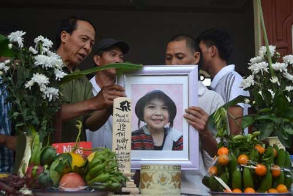

Vụ bé gái bị sát hại ở Nhật: Nỗi đau khôn cùng từ lời kể của ông nội
Tác giả: Zing.vn
April 3, 2017 at 10:30 AM 120

Chưa khi nào ông Lê Đình Kênh (SN 1952, ông nội nạn nhân) lại thấy đau đớn đến thế. Lúc này, ông Kênh chỉ mong cơ quan chức năng sớm tìm ra hung thủ đã hại cháu gái mình.
Những ngày qua, tại thôn Bãi Sậy 3 (xã Tân Dân, huyện Khoái Châu, Hưng Yên) chìm đắm trong đau thương, tang tóc. Rất nhiều người, từ già đến trẻ đều thương xót cháu Lê Thị Nhật Linh (9 tuổi), nghi bị sát hại vào ngày 24/3 khi cháu trên đường đi học một mình tại Nhật Bản. Theo đó, sau một thời gian mất tích khi đang trên đường đến trường, thi thể của cháu Nhật Linh được cơ quan chức năng nước sở tại tìm thấy tại một kênh thoát nước ở cánh đồng cách nhà khoảng trên 10km. Nguyên nhân ban đầu dẫn đến tử vong của cháu được kết luận do bị siết cổ đến ngạt thở

Khi PV Báo Gia đình & Xã hội có mặt tại gia đình nạn nhân xấu số cũng là lúc lễ an táng cháu Nhật Linh vừa được hoàn tất vào sáng 3/4. Hướng ánh mắt đau buồn về phía di ảnh của cháu nội, ông Lê Đình Kênh vẫn không tin được nỗi mất mát quá lớn bỗng dồn xuống gia đình. “Hôm nhận được tin cháu gái mất tích, con dâu và vợ tôi ngất lịm. Cháu còn nhỏ tuổi, có tội tình gì mà người ta hành xử độc ác đến thế”, ông Kênh đau xót.
Ông Kênh cho biết, do có công việc cần giải quyết nên ngày 22/3, chị Nguyễn Thị Nguyên (SN 1986, mẹ cháu Linh) cùng con trai út về Việt Nam. Trưa 24/3, chị Nguyên nhận được điện thoại của chồng là anh Lê Thanh Hào (SN 1982) thông báo cháu Linh mất tích trên đường đến trường. Ít ngày sau, cơ quan chức năng tìm thấy thi thể cháu Linh, chị Nguyên cùng con trai vội quay trở lại Nhật Bản để nhìn mặt con gái lần cuối và đưa di quan Linh về quê lo hậu sự.